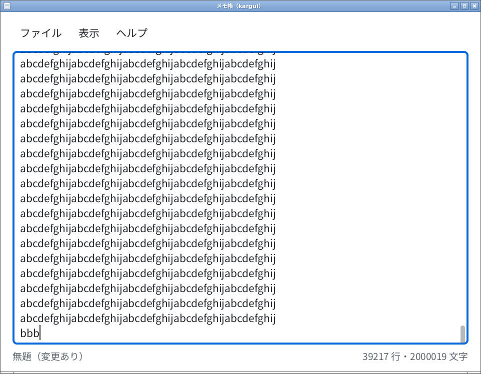

kargui 開発レポート ・ 第 22 章
長い文字の入力欄
前の章の確かめで、2 MB の文字を貼った入力欄が、何も変わらないフレームでも重いと分かりました。調べると、原因は 1 つではなく 5 つありました。この件は別のセッションが受け持ち、直した後は、メモ帳でキーを 1 つ打つ時間が約 68 秒から 10〜15 ミリ秒になりました。
この章で分かること
- 見えている字だけを描く物に入れる方法
- 文字の数の 2 乗で遅くなる数え方
- 並べた結果を覚える表が、長い文字で記憶を食う理由
- 長い文字をかたまりに分けて、変わった所だけ並べ直す形
見つけた時の数
検証機の X11（Xvfb、倍率 1.5）で、2 つの見本に 2 MB の文字を貼って測りました。家計簿の「メモ」は 1 行の入力欄で、200 万字を 1 行で入れます。メモ帳は複数行の入力欄で、2 MB を 39,216 行に分けて入れます。
| 項目 | 家計簿（1 行） | メモ帳（複数行） |
|---|---|---|
| 描く物の数（quads） | 2,000,194 | 1,960,837 |
| 何も変わらないフレーム | 153〜183 ms | 57〜61 ms |
| キー 1 つ | 1,044〜1,075 ms | 68,037〜68,343 ms |
| 記憶（キー 3 つの後） | 704 MB | 739 MB |
1 行の欄に見えているのは 60 字ほどです。それなのに描く物が 200 万個ありました。メモ帳はキー 1 つに 1 分以上かかり、打つたびに記憶が 121〜133 MB ずつ増えていました。
原因 1: 見えない字まで描く物に入れていた
入力欄を描く所（ui/draw.rs）は、並べた字を全部、描く物に入れていました。描く物の一覧も、切り抜きの範囲と比べていませんでした。CPU の道は変わった所を探すため、毎フレーム 200 万個をまとめ直していました。何も描き直さないフレームでも、描く処理に約 58 ms かかっていたのはこのためです。
直し方は、並べた字を 128 字ごとの範囲に分けて覚え、切り抜きの範囲と重なる範囲の字だけを入れることです。書式付きの文字も同じ関数を使います。家計簿の描く物は 243 個になりました。
原因 2: 行の位置を頭から数え直していた
Linux と macOS の文字の道（portable）は、行の一覧を作る時に、行ごとにその行の位置（UTF-16 の数）を文字列の頭から数え直していました。時間は行の数と文字の数の掛け算で増えます。39,216 行・2 MB のメモ帳では、貼る時も打つ時も約 68 秒かかりました。文字の位置の表はすでに作ってあったので、そこから引く形に直しました。
原因 3: 古い版を覚えたまま残していた
並べた結果は、文字列を鍵にして表に覚えています（上限 4,096 件）。打つたびに文字列が変わるので、前の版の結果が表に残ります。200 万字の欄では、キーを 3 つ打つと記憶が 704 MB まで増えました。16 KiB 以上の文字列の結果は、そのフレームで使わなければ忘れる形にしました。
原因 4: キャレットの位置を、毎フレーム頭から足していた
原因 1〜3 を直した後も、家計簿の何も変わらないフレームに約 70 ms かかっていました。portable の道は、キャレット（入力の位置の縦線）の横の位置を、文字を並べる部品（parley）に聞いていました。parley は、行の頭から字の幅を足して答えます（Cluster::visual_offset）。200 万字の 1 行の終わりでは、1 回に約 80 ms かかりました。聞かれた位置ごとの答えを、並べた結果に覚えておく形にしました。200 回聞く試験の時間は、4.4 秒から 0.1 ms になりました。
原因 5: 1 字変わると全文を並べ直していた
ここまでで、何も変わらないフレームは数 ms になりました。それでも、キーを 1 つ打つのに約 0.9 秒かかりました。並べた結果を文字列全体を鍵にして覚えているので、1 字でも違うと全文を並べ直していたからです。
長い文字を、かたまりに分けて並べる形に作り替えました（text/block.rs）。打った時は、変わったかたまりだけを並べ直し、ほかのかたまりは前の結果を使います。
直した後の数
| 項目 | 直す前 | 直した後 |
|---|---|---|
| 家計簿の描く物の数 | 2,000,194 | 243 |
| 家計簿の何も変わらないフレーム | 153〜183 ms | 多くは 5〜8 ms |
| 家計簿のキー 1 つ | 1,044〜1,075 ms | 14〜24 ms |
| メモ帳の描く物の数 | 1,960,837 | 987 |
| メモ帳に貼った時 | 68,666 ms | 1,161 ms |
| メモ帳の何も変わらないフレーム | 57〜61 ms | 多くは 4〜7 ms |
| メモ帳のキー 1 つ | 68,037〜68,343 ms | 10〜15 ms |
直した後も、画面が正しく描かれることを写真で確かめました。メモ帳の下の欄には「39217 行・2000019 文字」と出ています。上の端で一部だけ見える行も描かれています。

残っていること
- 貼った直後の 1 回は、全文を初めて並べるので約 1.1 秒かかる。
- Windows の文字の道（DirectWrite）で、とても長い 1 行の終わりの位置が少しずれる（10 万字で 53 画素）。座標が大きいと、小数の誤差が溜まるためとみられる。今回の変更の前からある。
- 何も変わらないフレームに残る数 ms は、2 MB の文字列の写しと、文字の位置を頭から数える処理。
どの原因も、1 回なら目立たない処理を、毎フレームか行ごとに繰り返していました。短い文字では速いので、ふつうの試験では見つかりません。文字や一覧を扱う部品は、2 MB や 4 万行の大きさでも測ってください。
次の段階
次は、Windows の版で、OS の明暗を開いたまま切り替えた時に追うようにします。そのあと、macOS の仕上げに進みます。